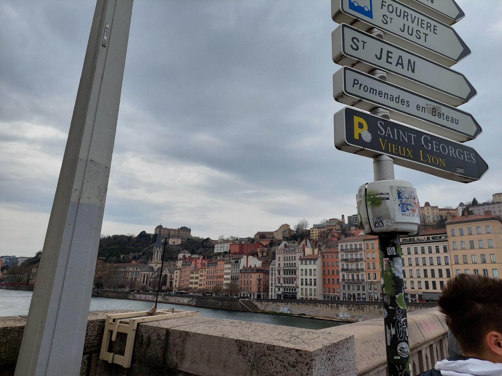
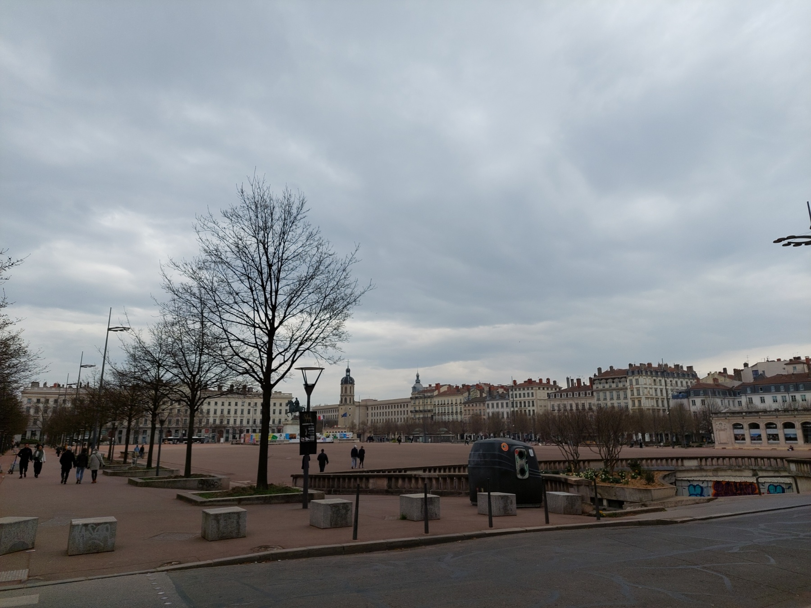
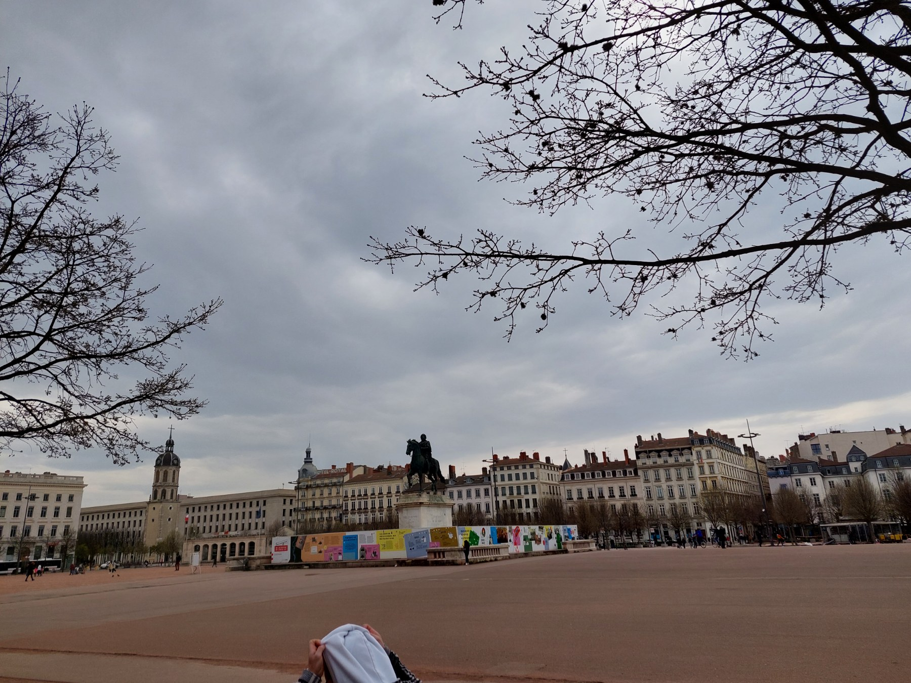
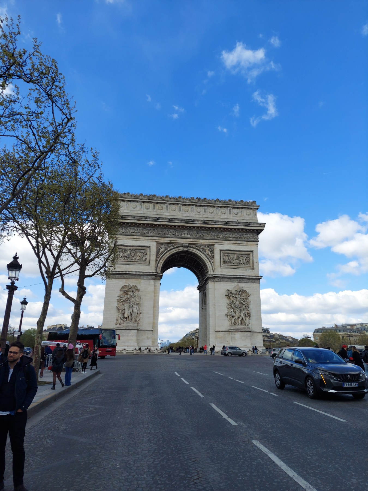
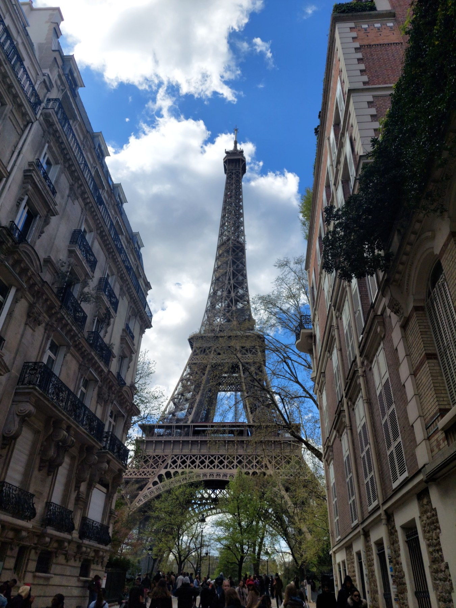
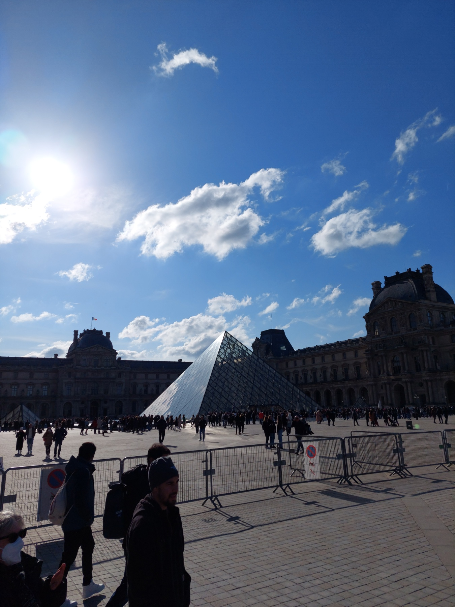

From all the places i've been and visited so far, i want to single out the trip to France, which i had an opportunity to go on a professional practice for one month in the city of Lyon. The city is in the heart of France, Lyon is a city that embodies the essence of the country's rich history, gastronomy, and vibrant culture. With its cobblestone streets, ancient Roman ruins, and world-renowned cuisine, Lyon beckons travelers to immerse themselves in its enchanting atmosphere. In this travel essay, I invite you to join me on a journey through Lyon, where we will explore its historical landmarks, indulge in its culinary delights, and witness the artistic and cultural treasures that make this city truly special.
Stepping into Vieux Lyon, the city's historic district, feels like stepping back in time. The narrow streets, lined with Renaissance-era buildings, exude an old-world charm that captivates the imagination. As I wandered through the traboules, hidden passageways that wind through the buildings, I discovered the secrets of Lyon's past. The impressive Cathédrale Saint-Jean and the Roman amphitheater of Fourvière bear witness to Lyon's ancient roots, while the beautifully preserved traboules offer a glimpse into the city's architectural heritage.
  Paris, France, often referred to as the "City of Lights," is a captivating metropolis that exudes charm, elegance, and a rich cultural heritage. Nestled along the banks of the Seine River, Paris is renowned for its iconic landmarks, world-class art museums, and romantic atmosphere. The city's architectural marvels, such as the majestic Eiffel Tower, the Gothic masterpiece of Notre-Dame Cathedral, and the opulent Palace of Versailles, reflect centuries of history and artistic brilliance.
  Paris is a heaven for art enthusiasts, boasting famous museums like the Louvre, home to the enigmatic Mona Lisa, and the Musée d'Orsay, which houses an extensive collection of Impressionist masterpieces. Beyond its artistic allure, Paris is a culinary paradise, with its quaint cafes, patisseries, and Michelin-starred restaurants offering delectable French cuisine. The city's vibrant neighborhoods, such as Montmartre with its bohemian spirit, the fashionable Champs-Élysées, and the charming Latin Quarter, each possess their own unique character and allure. Paris truly captivates the senses, with its picturesque streets, beautiful parks and gardens, and the melodic sounds of the French language floating through the air.